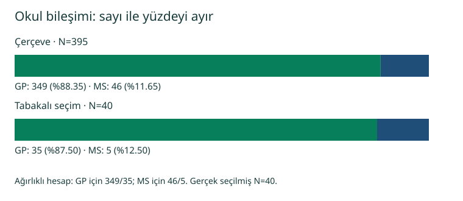

06 / ÖRNEKLEME YÖNTEMLERİ
Örneklem sayısı başka, ağırlık toplamı başka.
395 gerçek kayıt · Basit ve tabakalı seçimlerde 40’ar kayıt
40 kayıtla 395 kayıtlık çerçeveyi özetlemek
Student Performance matematik dosyasının 395 kaydı kullanılır. CSV’de 13 sütun bulunur; srs40 ve strat40 kayıtlı seçim göstergeleridir. İki örneklemde de 40 kayıt vardır. Bunlar 12 birimlik öğretim örneği değildir.
| Kapsam | N | Ortalama | Örneklem SS |
|---|---|---|---|
| Tam dosya | 395 | 10.41518987 | 4.581442611 |
| Basit rastgele | 40 | 10.27500000 | 5.565403664 |

| Okul | Çerçeve N | Seçilen n | Örneklem % | Ağırlık N/n |
|---|---|---|---|---|
| GP | 349 | 35 | 87,5 | 349/35 ≈ 9,971429 |
| MS | 46 | 5 | 12,5 | 46/5 = 9,2 |
Σ(w × G3) / Σw; ağırlık toplamı 395. SPSS’in ağırlıklı tablosundaki N=395, 395 kişi seçildiği anlamına gelmez: gerçek örneklem büyüklüğü 40’tır.
Bu çekimdeki farktan yöntemlerin genel doğruluğu çıkarılamaz. Tasarıma uygun standart hata veya güven aralığı burada hesaplanmaz. İki okulun gözlemsel verileri tüm öğrencilere otomatik olarak genellenemez; nedensellik göstermez.
İndir, klasörü seç, çalıştır
Gerçek veri ZIP’i · 395 kayıt12 birimlik öğretime dön
ZIP’i tamamen ayıklayın. README.md ve companion klasörünü birlikte içeren b06-gercek-test-v1 paket kökünde PowerShell açın:
py companion/spss/python/b06.pyBu özgün betikte --check yoktur. Veri boyutu, eksiksizlik ve iki örneklem büyüklüğü assert ile denetlenir; sonuçlar yazdırılır. 29 kontrol yalnız öğretim paketine aittir.
R konsolunda önce ilk satırı çalıştırıp bu paketin README.md dosyasını seçin, sonra ikinci satırı çalıştırın:
setwd(dirname(file.choose()))
source("companion/spss/r/b06.R")SPSS için açık çalışmalarınızı koruyun; paket rehberini izleyerek çalışma klasörünü ayıklanmış paket köküne ayarlayın. ZIP içi yolu veya syntax klasörünü seçmeyin. Özgün CSV ve analiz dosyalarını değiştirmeyin.
Kaynak ve doğrulama kapsamı
Cortez, P. (2008). Student Performance. UCI Machine Learning Repository. DOI: 10.24432/C5TG7T. Mevcut kaynak belgesinde lisans CC BY 4.0 olarak kayıtlıdır; bu önizlemede yeni çevrimiçi lisans denetimi yapılmadı. Kaynak/dönüşüm belgesi pakette aynen korunur; belgede sözü geçen ham dosya ve Excel bu dar test teslimine dahil değildir.
Kullanıcı Python ve R çıktıları ile SPSS’in tam dosya, basit örneklem, tabakalı okul frekansları ve ağırlıklı ortalama tabloları gösterilen hassasiyette eşleşti. Bu, tam SPV incelemesi veya 29 otomatik kontrol değildir. Kaynak seçimler, manifestler ve test ZIP’leri değiştirilmedi.